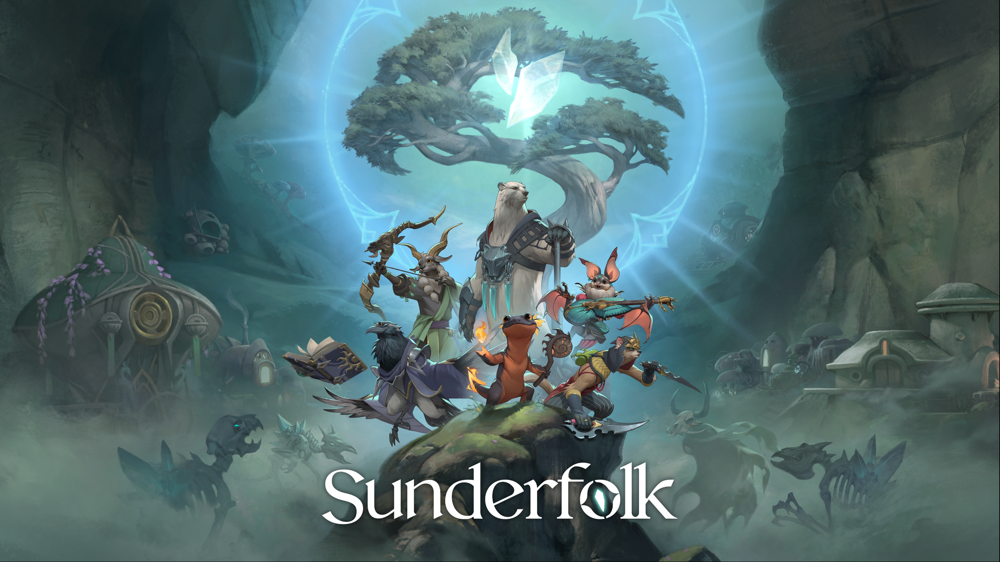

Neo Zhang
MULTI-DISCIPLINARY GENERALIST
GAME DESIGNER
ABOUT ME

Hi, I'm Neo Zhang (張凱翔), a Game Designer based in the Bay Area and open to relocation.
I've worked across a wide range of design areas, including combat, systems, level and mission, character, cinematic, narrative, and technical design, often juggling three or more at once.
With a background in Computer Science, I can script in C#, C++, and Python and handle in-engine implementation independently in Unity, Unreal, and Godot.
What drives me most is problem-solving: finding creative solutions to tough design challenges, especially alongside a collaborative team.
Outside of work, I enjoy playing video games, watching movies and anime, discussing cinematography, and photography.
MY WORK
Platform: Console, PC, and Mobile Game
Steam Review: Very Positive
Designed heroes, enemies, levels, encounters, cinematics, and narrative for Sunderfolk, a couch co-op tactical RPG where players control their heroes with their phones.



SMALL PROJECTS
LET'S CONNECT
I'm a versatile designer who picks things up fast, and I'd love to make games across every genre. If my work and what I can bring to a team interest you, let's get in touch and build something amazing together!
You can reach me directly via Copied to Clipboard! or LinkedIn.